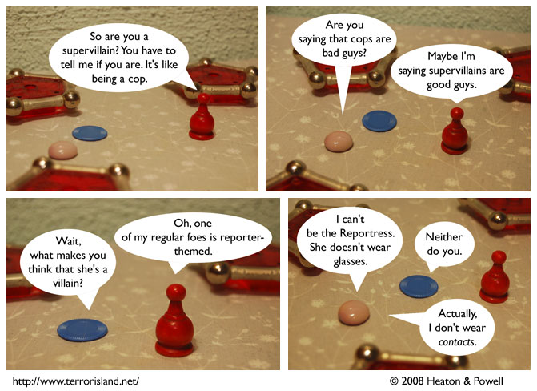

Strip #280
— Wednesday, March 26, 2008
Who interviews the interviewers? Waiterman, that’s who.
Notes, Thoughts, &c.
Ben’s Notes
I like that in Gill Sans, the italic lowercase a is a different sort of glyph from the roman lowercase a. The italic version of the font is more of a sloped roman than a true italic (not that there’s anything wrong with that), but seeing the different a’s even in those cases is a good touch.
The italic p is cooler, though. I’m looking for a chance to introduce a character who only speaks in giant lowercase italic p’s.
Lewis’s Notes
Today I spent a substantial amount of time considering whether it is true that Sherlock Holmes’ coat has a determinate threadcount, despite no particular threadcount being specified in the texts. Surprisingly, this is relevant to some of my academic work.